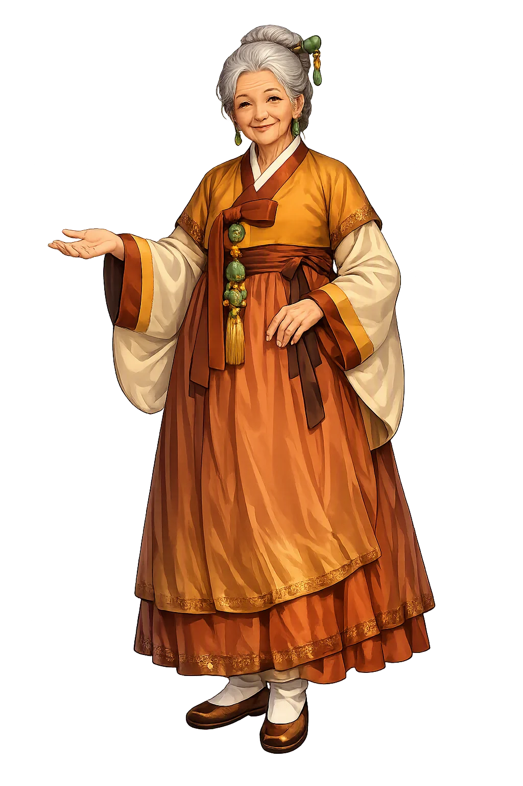
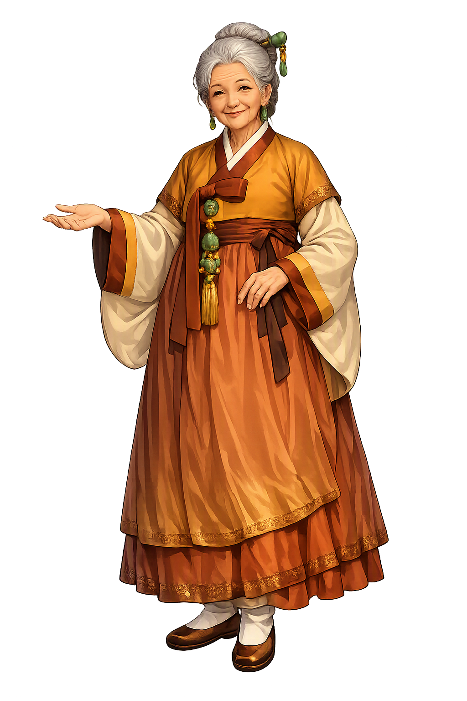

Unicode restoration and ASCII comparison
할머니
The name in its original Korean form. Halmoni (할머니) is attested in the source tradition — “Grandmother”. Its original diacritics and script distinctions carry the full phonetic and orthographic weight of the source tradition.
halmoni
The plain halmoni form is identical to the Unicode restoration. Because this name is already written in Latin letters, no diacritics, stress, or script information were lost — only capitalization differs.
Halmoni
The Unicode restoration does not need to recover lost marks for Halmoni. Its value is canonical spelling and consistent cataloguing, not the reconstruction of erased orthography. The domain is readable as-is to both DNS and humanity.
Halmoni.com → halmoni.com
The non-ASCII characters in Halmoni are encoded while the ASCII remains visible. To the DNS, it is Punycode. To humanity, it is Halmoni.
How Halmoni travels from ancient script to the modern URL
Owned, ideal, and ASCII forms of Halmoni
Halmoni
Restores 할머니. The full Unicode restoration. halmoni.com is not in the PuniCodex collection — it is watched for release; if it drops, this temple upgrades to an owned flagship.
How Halmoni was spoken
venerated grandmother of earth, ancestry, and the household
Halmoni is the grandmother spirit, a title of veneration given to ancestral female deities who watch over earth, lineage, and the household in Korean tradition. The name means "Grandmother" and belongs to the domain "Grandmother Spirit, Earth." Halmoni means "grandmother" in Korean, but in religious usage it becomes an honorific title for powerful female spirits who protect lineage, land, and the domestic sphere. The most famous Halmoni figure is Seolmundae Halmang of Jeju Island, a giant grandmother whose body became the landscape and whose grief created the island's geography.
A title of sacred grandmotherhood applied to ancestral, domestic, and landscape goddesses.
Halmoni watches over the household and the land that feeds it.
The giant creator grandmother whose body formed the island of Jeju.
She receives lineage rites and petitions for family harmony and health.
Stories of Halmoni
The mythology of Halmoni is preserved in Korean oral tradition, shamanic ritual texts, and classical sources such as the Samguk Yusa. The narratives are not merely stories; they encode social values, ritual obligations, and relationships between humans, nature, and the sacred. Some details vary by region and by shamanic lineage.
The giant grandmother Seolmundae Halmang is said to have created the geography of Jeju Island with her body. When she died, her corpse became mountains, fields, and villages; her tears formed streams and coastal features.
In mainland households, Halmoni can refer to the spirit of an honoured female ancestor or to the grandmotherly form of a domestic deity. Offerings of food and wine at ancestral rites keep her favour and protection active.
The title Halmoni is added to Samshin, the three birth spirits, producing Samshin Halmoni, a single grandmotherly goddess who protects mothers and infants. This convergence shows how the title gathers female divine power across cults.
Halmoni invites reflection on the relationship between name, place, and identity. The restoration of the capitalised scholarly form is a small act of recognition: it marks the name as a proper noun of continuing significance in Korean culture and resists the flattening effect of ASCII-only domain names.
Enter Extended Lore